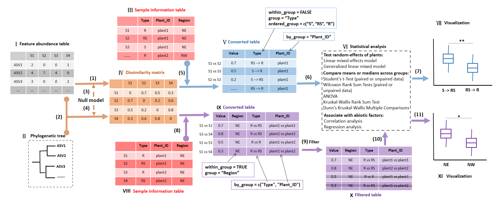
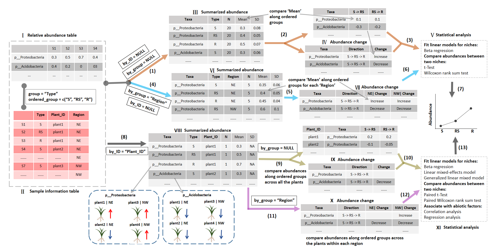

Chapter 13 mecoturn package
The mecoturn package is designed to study microbial turnover along plant compartments originally (https://github.com/ChiLiubio/mecoturn). Generally speaking, it can be used in any case associated with a gradient.
# mecoturn v0.3.0
install.packages("mecoturn")
# check and install dependent packages
packages <- c("agricolae")
for(x in packages){
if(!require(x, character.only = TRUE)){
install.packages(x)
}
}13.1 betaturn class
The betaturn class is used to study the turnover of communities, i.e. beta diversity along a gradient (Anderson et al. 2011).
The pipeline consists of the steps of dissimilarity matrix generation, matrix conversion, differential test and visualization.
Creating betaturn object can generate the dissimilarity matrix stored in the object.
The example data wheat_16S is the amplicon sequencing data of 16S rDNA of wheat samples from different regions.
In wheat_16S$sample_table, the Type column represents the niches, i.e. plant compartments, including S (bulk soil), RS (rhizosphere soil) and R (root endophyte).
The Plant_ID column denotes each unique plant individual that the samples belong to.
The Region column means the sampling region of those plants.
Each region has five plant individuals.

Schematic diagrams of the framework in betaturn class.
In the flow chart,
Roman numeral represents the data for the input or output of associated step.
Arabic numeral within brackets denotes the step for the corresponding operation.
The workflow of betaturn class consists of the dissimilarity matrix generation, matrix conversion, differential test and visualization.
The core of the workflow is the matrix conversion, which can be classified into two cases (step 5 and 8) in the Figure.
Ⅰ: Feature abundance table: microtable$otu_table object.
The microtable object can be created by the microtable class (R6 class) in microeco package.
The feature abundance table denotes the amplicon sequence variants (ASV) table or operational taxonomic units (OTU) abundance table in a study and should be data.frame format.
Ⅱ: Phylogenetic tree: microtable$phylo_tree object.
It represents reconstructed phylogenetic tree based on the representative sequences and should be “phylo” format coming from read.tree function in ape package.
It is designed for calculating phylogenetic distance matrix of beta diversity,
such as mean nearest taxon distance (betaMNTD) and UniFrac metrics.
Ⅲ: Sample information table: microtable$sample_table object. It is the sample metadata and must be data.frame format.
The ‘Type’ column represents plant compartments (including bulk soil) or other ordered groups used for the following comparison.
S: bulk soil; RS: rhizosphere soil; R: root endophyte.
The ‘Plant_ID’ column denotes each plant, by which the ordered distance transformation can be accomplished.
Ⅳ: Dissimilarity matrix: symmetric distance matrix in betaturn$dataset$beta_diversity list.
The names of both the rows and columns of this symmetrical matrix are the sample names and they are correspondingly aligned as well.
Ⅴ: Converted table: betaturn$res_group_distance object.
It is the output of function cal_group_distance of betaturn class with the parameter “within_group = FALSE”.
The table conversion is performed between any two samples of ‘Type’ column in Ⅲ,
but the combination of any two samples is constrained by the by_group parameter,
i.e. the conversion is only completed within the same plant according to ‘Plant_ID’ column of Ⅲ in the example,
which is one of the key features of the mecoturn package.
The converted distance table has a new ‘Type’ column as the combination of the elements in ‘Type’ column of original sample information table.
The ordered_group is designed optionally to sort the group order in the result.
Ⅵ: Statistical analysis: betaturn$res_group_distance_diff object.
The approaches that used to compare means or medians across groups (i.e. groups in ‘Type’ column of Ⅲ)
are adapted from the cal_diff function of trans_alpha class in microeco package.
By accessing the data in betaturn$res_group_distance object,
correlation and regression analysis can be easily conducted with the trans_env class of microeco package.
Ⅶ: Visualization: the ggplot2 object for the mode-“within_group = FALSE”.
Ⅷ: Sample information table similar with Ⅲ.
In this example, “Region” column represents that the plants are collected from different regions.
It is used to show the mode-“within_group = TRUE”.
Ⅸ: Converted table: similar with Ⅴ, but it is generated with the parameter “within_group = TRUE” in cal_group_distance function of betaturn class.
The table conversion is accomplished within each element of the “Region” column in Ⅷ for this study.
It can also be other column, such as “Plant_ID”.
Any two samples within an element of “Region” column will be combined.
Under such a circumstance,
by_group parameter is designed to generate the additional combinations related to the ‘Type’ and ‘Plant_ID’ columns in this study used for the following filtering.
So, in the mode-“within_group = TRUE”, the aim of by_group parameter is to create the combinations of groups as the table shows,
not to play a role of restriction of the by_group in the mode-“within_group = FALSE”.
Ⅹ: Filtered table: similar with Ⅸ.
Here, the filtered table is an example to show the flexible manipulation on the converted table.
In this example, needless rows (combined by different plants) are deleted by customized operation in order to generate a final table for the following statistics and visualization.
Ⅺ: Visualization: ggplot2 object for the mode-“within_group = TRUE”.
(1): betaturn$new function with the parameter measure = “bray” (Bray-Curtis dissimilarity) or measure = “jaccard” (Jaccard dissimilarity).
Several beta diversity metrics are provided to obtain the distance matrix by creating betaturn object.
(2): betaturn$new function with the parameter measure = “wei_unifrac”, “unwei_unifrac”, “betaMPD” or “betaMNTD”.
Several distance metrics of phylogenetic beta diversity require both the file Ⅰ and Ⅱ.
(3): betaturn$new function with the parameter measure = “RCbray”. RCbray: Raup–Crick based Bray-Curtis dissimilarity.
(4): betaturn$new function with the parameter measure = “betaNRI”, “betaNTI” or “ses_UniFrac”.
Phylogenetic beta diversity, plus null model, can be used to obtain the standardized effect size of observed phylogenetic beta diversity.
betaNTI: beta nearest taxon index; betaNRI: beta net relatedness index; ses_UniFrac: standardized effect size of UniFrac distance.
(5): betaturn$cal_group_distance(within_group = FALSE, …).
The distance matrix can be converted to a long format table according to the group classifications in Ⅲ.
The ‘Plant_ID’ (or other name) is used for guiding the file conversion in the mode-“within_group = FALSE” of Ⅴ.
The new ‘Type’ in Ⅴ is generated by combining paired plant compartments.
(6): betaturn$cal_group_distance_diff function.
The differential test can be performed with several available approaches shown in the Ⅵ.
(7): betaturn$plot_group_distance function.
The visualization is implemented based on R ggplo2 and ggpubr packages.
The differential test results in step (6) can be mapped to the plot automatically.
(8): betaturn$cal_group_distance(within_group = TRUE, …).
This step is similar with step (5), but it is performed by the function cal_group_distance with the parameter “within_group = TRUE”.
(9): customized manipulation on betaturn$res_group_distance file.
This step is to manipulate the file res_group_distance in the betaturn object and delete useless rows in the file according to the customized requirement.
(10): Similar with step (6).
(11): Similar with step (7).
library(mecoturn)
library(magrittr)
data(wheat_16S)
# see the help document of betaturn
?betaturn
# use 'bray', i.e. Bray-Curtis dissimilarity, as the example
b1 <- betaturn$new(wheat_16S, measure = "bray")## The distance matrix is stored in object$beta_diversity list ...The matrix conversion is the core step in the betaturn class.
It has two cases: within_group = TRUE and within_group = FALSE.
The case within_group = FALSE means the distance conversion is carried out between any two elements of Type column (group parameter).
The parameter by_group is used to constrain the conversion, i.e. the conversion is performed for each plant.
b1$cal_group_distance(group = "Type", within_group = FALSE, by_group = "Plant_ID")## The result is stored in object$res_group_distance ...head(b1$res_group_distance)## Value Type Plant_ID
## 1 0.7844286 S vs RS Northwest_Wheat_1
## 2 0.7922857 S vs RS Northwest_Wheat_2
## 3 0.6602857 S vs RS Northwest_Wheat_3
## 4 0.8028571 S vs RS Northwest_Wheat_4
## 5 0.7151429 S vs RS Northwest_Wheat_5
## 6 0.6704286 S vs RS East_Wheat_1The combinations of Type may be not well-organized. We use ordered_group parameter to sort them and sep parameter to assign the direction.
b1$cal_group_distance(group = "Type", ordered_group = c("S", "RS", "R"), within_group = FALSE, by_group = "Plant_ID", sep = " -> ")## The result is stored in object$res_group_distance ...head(b1$res_group_distance)## Value Type Plant_ID
## 1 0.7844286 S -> RS Northwest_Wheat_1
## 2 0.7922857 S -> RS Northwest_Wheat_2
## 3 0.6602857 S -> RS Northwest_Wheat_3
## 4 0.8028571 S -> RS Northwest_Wheat_4
## 5 0.7151429 S -> RS Northwest_Wheat_5
## 6 0.6704286 S -> RS East_Wheat_1The cal_group_distance_diff function can be used to perform the statistical analysis.
# Wilcoxon rank sum test
b1$cal_group_distance_diff(method = "wilcox")
# paired Wilcoxon test by adding by_ID
b1$cal_group_distance_diff(method = "wilcox", by_ID = "Plant_ID")
# box plot
b1$plot_group_distance()The parameter add_cols can be used to add other columns in sample_table to the final table when within_group = FALSE.
This is especially useful when the statistical analysis will be performed for different groups.
b1$cal_group_distance(group = "Type", ordered_group = c("S", "RS", "R"), within_group = FALSE, by_group = "Plant_ID", sep = " -> ", add_cols = "Region")
head(b1$res_group_distance)
# Wilcoxon test for each region
b1$cal_group_distance_diff(method = "wilcox", by_group = "Region")
b1$plot_group_distance()Then let’s use linear mixed-effects model to check the random effects of plants.
For the usages of the formula in linear mixed-effects model (lme4 package), see https://mspeekenbrink.github.io/sdam-r-companion/linear-mixed-effects-models.html
b1$cal_group_distance(group = "Type", ordered_group = c("S", "RS", "R"), within_group = FALSE, by_group = "Plant_ID", sep = " -> ", add_cols = "Region")
# random intercept and slope of Region
b1$cal_group_distance_diff(method = "lme", formula = "Type + (1 + Type| Region)")
# random intercept of Plant_ID
b1$cal_group_distance_diff(method = "lme", formula = "Type + (1 | Plant_ID)")
# random intercept of Plant_ID nested in Region
b1$cal_group_distance_diff(method = "lme", formula = "Type + (1 | Region/Plant_ID)")
b1$res_group_distance_diffAnother case within_group = TURE means the distance conversion is performed according to each element of the group.
For example, when group = "Region", any two samples within an element of "Region" column will be combined.
In this scenario, by_group parameter is designed to generate the additional combinations related to other columns.
b1$cal_group_distance(within_group = TRUE, group = "Region", by_group = c("Type", "Plant_ID"))
head(b1$res_group_distance)
# filter the combinations not coming from the same plant
all_plants <- unique(wheat_16S$sample_table$Plant_ID)
b1$res_group_distance %<>% .[.$Plant_ID %in% paste0(all_plants, " vs ", all_plants), ]
# compare values across regions
b1$cal_group_distance_diff(method = "anova")
b1$plot_group_distance(add_sig_text_size = 5.6, xtext_angle = 30)13.2 taxaturn class
The taxaturn class refers to microbial abundance change along a gradient. Its workflow includes the taxonomic abundance calculation, abundance transformation, abundance change summary, statistical analysis and visualization.

The core of this workflow is the abundance change summary and statistical analysis,
which can be classified into two cases: by_ID = NULL and by_ID = “Plant_ID” in the example (step 1 or 4, and step 8 in the Figure).
Ⅰ: Taxonomic abundance table: the table (data.frame format) in microtable$taxa_abund list.
It denotes taxonomic abundance table with the data.frame format at a specific taxonomic level.
Ⅱ: Sample information table: the sample metadata, i.e. sample_table in microtable object.
The ‘Type’ column represents the plant compartments or other ordered groups used for the following comparisons.
The ‘Plant_ID’ column denotes each plant, which can guide the comparison of abundances for each plant when by_ID = “Plant_ID”.
“Region” column is used for the cases with by_group = “Region”.
Ⅲ: Summarized abundance: taxaturn$res_abund object.
This summarized abundance table is converted under the condition of by_ID = NULL and by_group = NULL.
Under this condition, the abundance is summarized by the groups of “Type” column of Ⅱ in order to generate ‘Mean’ and ‘SD’ in the result (mean and standard deviation of each group).
‘N’ is the sample number in each group.
Ⅳ: Abundance change table: res_change_pair (the upper one) and res_change (the table below) in the taxaturn object.
The change pattern along the ordered groups is generated according to the mean abundance in Ⅲ for each taxon.
The res_change_pair table has all paired abundance difference values between two neighboring niches for each taxon (the abundance of the latter minus that of the former).
The res_change is the following summary information of difference values along ordered paired groups in res_change_pair table.
In res_change table, there are three types of changes: ‘Increase’, ‘Decrease’ and others (fluctuation with the combination of ‘+’, ‘-’ or ‘0’,
or nothing when no consistent result is obtained across plants).
Ⅴ: Statistical analysis.
The approaches include beta regression model and differential abundance test between two groups.
The differential abundance test is designed for the comparison of two groups,
such as differential test between S and RS or between RS and R.
There are two implemented approaches: t-Test and Wilcoxon Rank Sum Test.
Ⅵ: Summarized abundance. Similar with Ⅲ, but the Mean and SD are performed by both the group (‘Type’) and by_group (‘Region’). So N is less than that in Ⅲ.
Ⅶ: Abundance change table. Similar with Ⅳ, but the ‘change’ trend is summarized for different regions, respectively.
Ⅷ: Summarized abundance. As by_ID is provided (“Plant_ID”), the N is 1. The Mean is the abundance of each sample of each plant. SD is not available (NA).
Ⅸ: Abundance change table: res_change_pair (the upper one) and res_change (the table below) in the taxaturn object.
The res_change_pair is a little different from that in Ⅳ, because it is calculated for each individual plant.
So the table has a column named by_ID (“Plant_ID”).
This table is particularly useful for the association between abundance difference values and environmental factors.
The res_change table is the summary result of res_change_pair table.
For the case ‘by_group = NULL’, the data in res_change is the consistent abundance comparison along ordered groups and across all the plants.
Ⅹ: Abundance change table.
Different from the res_change table of Ⅸ, the res_change table in Ⅹ is generated according to the by_group (‘Region’).
So the result is the consistent abundance comparisons along ordered groups within each region.
Note that the res_change_pair table is not shown here as it is same with res_change_pair in Ⅸ,
because the parameter by_group = “Region” only affects the change summary result.
Ⅺ: Statistical analysis. Different from Ⅴ, some approaches for this case (by_ID is provided) necessitates consideration of the paired data,
such as paired t-Test and paired Wilcoxon Rank Sum Test. The input data will be first sorted by the elements in “Plant_ID” column of Ⅱ.
The linear mixed-effects model can be used to test the random effects of plant individuals similar with the Ⅵ.
To better fit the relative abundance (bounded by 0 and 1),
the family function of generalized linear mixed model (GLMM) in taxaturn class is fixed with the beta distribution function, and the link function is “logit” function.
The correlation and regression analysis can be performed by means of the trans_env class of microeco package.
(1) and (2): taxaturn$new function. The parameter by_ID = NULL and by_group = NULL is applied in this example.
Creating taxaturn object can generate Ⅲ (i.e. res_abund) in the object.
If the taxonomic abundance (i.e. taxa_abund list) in the input microtable object is NULL,
the function can automatically invoke the cal_abund function in microtable object to calculate it.
Creating taxaturn object can also create Ⅳ (i.e. res_change_pair and res_change) in the object.
(3): taxaturn$cal_diff function. The cal_diff function in taxaturn class is designed to perform the differential test.
(4) and (5): taxaturn$new function. Similar with step (1). The parameter by_ID = NULL and by_group = “Region” is used in this example.
(6): Similar with step (3).
(7): taxaturn$plot function. The plot function in taxaturn class is used to plot the abundance along ordered groups and generate a ggplot2 object.
(8) and (9): taxaturn$new function with the parameter by_ID = “Plant_ID” and by_group = NULL.
(10): taxaturn$cal_diff function. For the case that by_ID parameter is provided,
the differential abundance test between two groups are designed for the paired data.
(8) and (11): taxaturn$new function with the parameter by_ID = “Plant_ID” and by_group = “Region”.
(12): Similar with step (10).
(13): Similar with step (7). For the case that by_ID parameter is provided, abundance visualization is performed for each element of by_ID parameter,
i.e. each plant individual in this example.
# study the abundance change of phyla by comparing the mean abundances without the consideration of plants
t1 <- taxaturn$new(wheat_16S, taxa_level = "Phylum", group = "Type", ordered_group = c("S", "RS", "R"), by_ID = NULL, by_group = NULL, filter_thres = 0.001)## Taxa abundance data is stored in object$res_abund ...## Abundance change along groups is stored in object$res_change_pair ...## Abundance change summary is stored in object$res_change ...head(t1$res_change)## Taxa Direction Change
## 1 k__Archaea|p__Thaumarchaeota S -> RS -> R Decrease
## 2 k__Bacteria|p__Acidobacteria S -> RS -> R Decrease
## 3 k__Bacteria|p__Actinobacteria S -> RS -> R Increase
## 4 k__Bacteria|p__Armatimonadetes S -> RS -> R Decrease
## 5 k__Bacteria|p__Bacteroidetes S -> RS -> R +|-
## 6 k__Bacteria|p__Chloroflexi S -> RS -> R Decreaset1$cal_diff(method = "wilcox", p_adjust_method = NULL)## Raw differential test results are stored in object$res_diff_raw ...## Differential test results have been added into object$res_change ...head(t1$res_change)## Taxa Direction Change S -> RS | Significance
## 1 k__Archaea|p__Thaumarchaeota S -> RS -> R Decrease ***
## 2 k__Bacteria|p__Acidobacteria S -> RS -> R Decrease ***
## 3 k__Bacteria|p__Actinobacteria S -> RS -> R Increase ns
## 4 k__Bacteria|p__Armatimonadetes S -> RS -> R Decrease *
## 5 k__Bacteria|p__Bacteroidetes S -> RS -> R +|- ns
## 6 k__Bacteria|p__Chloroflexi S -> RS -> R Decrease **
## RS -> R | Significance
## 1 ***
## 2 ***
## 3 **
## 4 **
## 5 ns
## 6 ***# compare the abundance change by summarizing the results for each plant individual
t1 <- taxaturn$new(wheat_16S, taxa_level = "Phylum", group = "Type", ordered_group = c("S", "RS", "R"), by_ID = "Plant_ID", by_group = NULL, filter_thres = 0.001)## Taxa abundance data is stored in object$res_abund ...## Abundance change along groups is stored in object$res_change_pair ...## Abundance change summary is stored in object$res_change ...head(t1$res_change)## Taxa Direction Change
## 1 k__Archaea|p__Thaumarchaeota S -> RS -> R
## 2 k__Bacteria|p__Acidobacteria S -> RS -> R Decrease
## 3 k__Bacteria|p__Actinobacteria S -> RS -> R
## 4 k__Bacteria|p__Armatimonadetes S -> RS -> R
## 5 k__Bacteria|p__Bacteroidetes S -> RS -> R
## 6 k__Bacteria|p__Chloroflexi S -> RS -> R# paired Wilcoxon test
t1$cal_diff(method = "wilcox", p_adjust_method = NULL)## Raw differential test results are stored in object$res_diff_raw ...## Differential test results have been added into object$res_change ...head(t1$res_change)## Taxa Direction Change S -> RS | Significance
## 1 k__Archaea|p__Thaumarchaeota S -> RS -> R ***
## 2 k__Bacteria|p__Acidobacteria S -> RS -> R Decrease ***
## 3 k__Bacteria|p__Actinobacteria S -> RS -> R ns
## 4 k__Bacteria|p__Armatimonadetes S -> RS -> R **
## 5 k__Bacteria|p__Bacteroidetes S -> RS -> R *
## 6 k__Bacteria|p__Chloroflexi S -> RS -> R ***
## RS -> R | Significance
## 1 ***
## 2 ***
## 3 **
## 4 ***
## 5 ns
## 6 ***The upper operations can also be applied to different groups.
# for each region without the consideration of plants
t1 <- taxaturn$new(wheat_16S, taxa_level = "Phylum", group = "Type", ordered_group = c("S", "RS", "R"), by_ID = NULL, by_group = "Region", filter_thres = 0.001)
head(t1$res_change)
t1$cal_diff(method = "wilcox", p_adjust_method = NULL)
head(t1$res_change)
# for each region with the consideration of plants
t1 <- taxaturn$new(wheat_16S, taxa_level = "Phylum", group = "Type", ordered_group = c("S", "RS", "R"), by_ID = "Plant_ID", by_group = "Region", filter_thres = 0.001)
head(t1$res_change)
# paired Wilcoxon test
t1$cal_diff(method = "wilcox", p_adjust_method = NULL)
head(t1$res_change)
t1$plot(point_size = 2)Then let’s show the linear mixed-effects model to analyze both the fixed and random effects.
t1 <- taxaturn$new(wheat_16S, taxa_level = "Phylum", group = "Type", ordered_group = c("S", "RS", "R"), by_ID = "Plant_ID", by_group = "Region")
t1$cal_diff(method = "lme", formula = "Type + (1 + Type | Region)", measure = "p__Proteobacteria")
t1$res_diffFor the relative abundance fitting, common parametric tests like anova is not a good way since the dependent variable is proportion data, which is not normally distributed or homoscedastic generally. Beta regression is suitable for the proportion data (bound at 0 and 1) (Douma, Weedon, and Warton 2019). This method is implemented based on the betareg package (Cribari-Neto and Zeileis 2010).
# for all samples
t1 <- taxaturn$new(wheat_16S, taxa_level = "Phylum", group = "Type", ordered_group = c("S", "RS", "R"), by_ID = "Plant_ID", by_group = NULL, filter_thres = 0.001)
t1$cal_diff(method = "betareg", formula = "Type")
t1$res_diff# for different regions
t1 <- taxaturn$new(wheat_16S, taxa_level = "Phylum", group = "Type", ordered_group = c("S", "RS", "R"), by_ID = "Plant_ID", by_group = "Region", filter_thres = 0.001)
# measure can be assigned with a taxon
t1$cal_diff(method = "betareg", formula = "Type", measure = "p__Proteobacteria")
t1$res_diff
t1$plot(point_size = 2, select_taxon = "p__Proteobacteria", plot_type = c("point", "smooth"), rect_fill = FALSE)When both the random effects and beta distribution fitting are considered in the model, generalized linear mixed model can be employed with the family function beta distribution function.
t1 <- taxaturn$new(wheat_16S, taxa_level = "Phylum", group = "Type", ordered_group = c("S", "RS", "R"), filter_thres = 0.001)
t1$cal_diff(method = "glmm", formula = "Type + (1|Region)", return_model = TRUE, group2num = TRUE)
View(t1$res_diff)
# extract the original models
m1 <- t1$res_model
# without the random effect term
t1$cal_diff(method = "glmm", formula = "Type", return_model = TRUE, group2num = TRUE)
m2 <- t1$res_model
# use anova to compare models
# names(m1)[1]: p__Proteobacteria
anova(m1[[1]], m2[[1]])